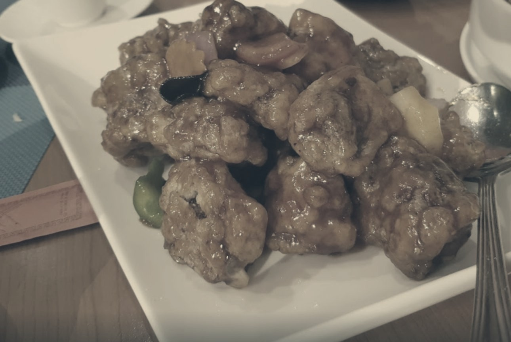
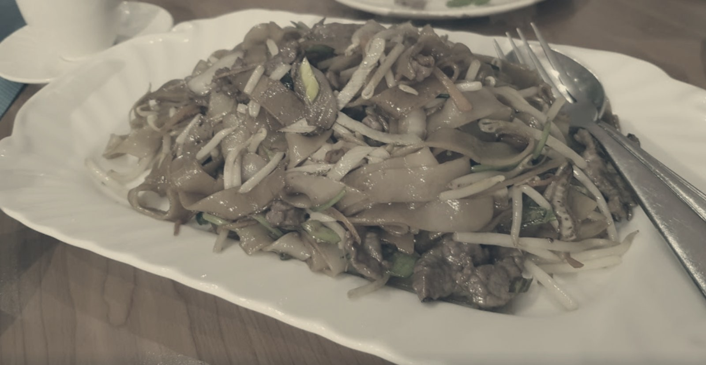
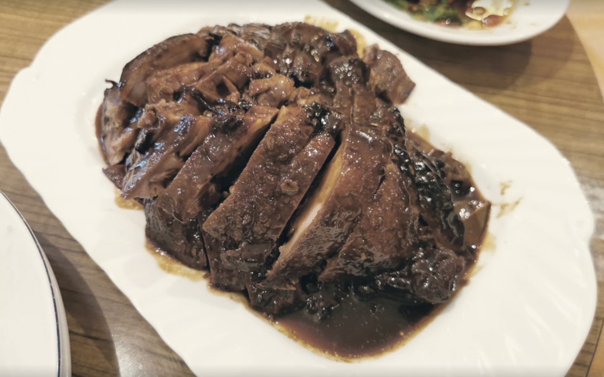
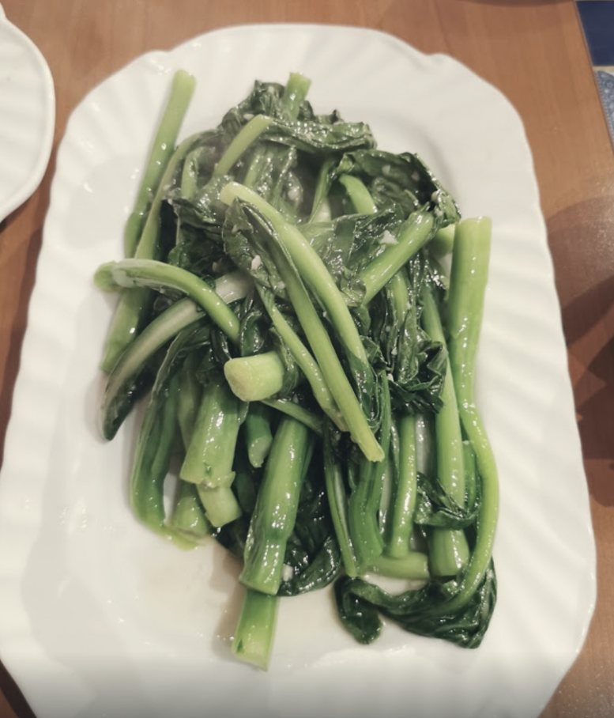
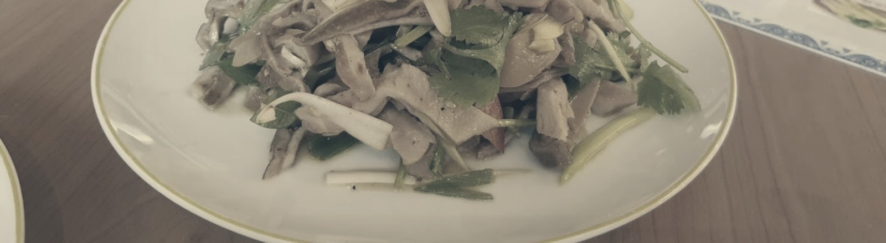
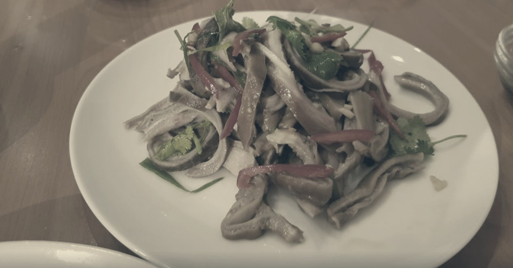

Bak Gi Bo北之寳
Le trésor du Nord — cuisine chinoise régionale (cantonaise, sichuanaise, du Nord-Est), généreuse et rapide, à deux pas de la Gare.
北之寳 — le trésor du Nord.
Le nom chinois de la maison, 北之寳, se compose de trois caractères : 北 (« nord »), 之 (particule « de »), 寳 (« trésor ») — le trésor du Nord. On y retrouve, à la lecture, l'écho du nom « Bak Gi Bo » en lettres latines.
Une cuisine chinoise régionale — cantonaise, sichuanaise et du Nord-Est (Dongbei) — et non coréenne, malgré une confusion fréquente dans les annuaires liée à la sonorité du nom. On y sert des plats qu'on ne trouve pas dans un « chinois » générique : tripes épicées à la sichuanaise, porc braisé aux légumes salés, nouilles de riz sautées au bœuf, poisson bouilli à la sichuanaise, canard laqué.
Comptoir, portions généreuses, service rapide.
On commande au comptoir
Beaucoup de plats sont déjà prêts en cuisine — le service est rapide, dès la commande passée.
Portions généreuses
Une cuisine abondante et à prix doux, pensée pour un repas de midi rapide ou une grande table à partager.
Sur place ou à emporter
Un nombre modeste de tables, et une forte activité à emporter — pratique pour les habitués de la Gare.
Le registre régional.
Un aperçu des spécialités régionales de la maison, classées par origine — cantonaise, sichuanaise, Nord-Est (Dongbei). Noms, orthographe, disponibilité et prix à confirmer avec l'établissement avant publication.
Cantonais
Sichuan
Nord-Est
Ce qui sort de la cuisine.
Photographies réelles de plats servis à la maison (galerie du restaurant, 2020) — à remplacer par des photos actuelles si la maison le souhaite.

Nouilles ho fun sautées au bœuf
Porc braisé, sauce soja foncée
Légumes verts sautés à l'ail
Salade froide épicée, coriandre
Entrée froide, piment et coriandre15 rue André Duchscher, Gare.
À deux pas de la Gare centrale de Luxembourg. Ce site est un aperçu réalisé par Webwerk — Bak Gi Bo n'a aujourd'hui aucun site officiel.
L-1424 Luxembourg (Gare)
691 89 22 89 mobile · à confirmer si principal